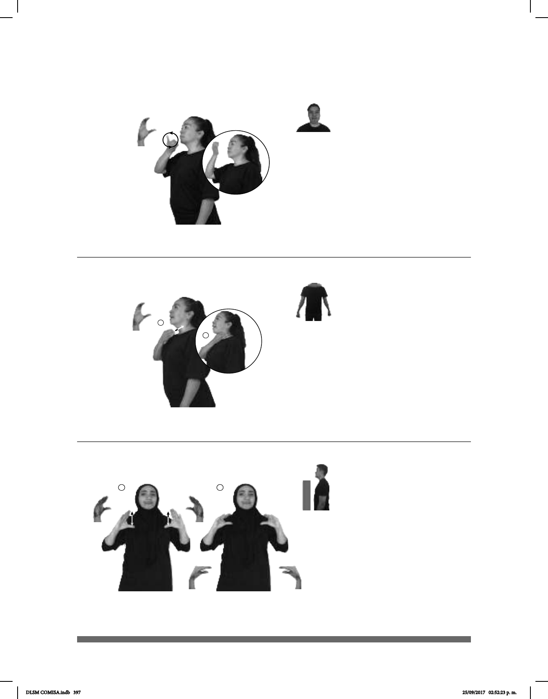

397
Seña: SM
C.1
Palma hacia adentro.
Sobre el cuello.
La mano sujeta el
cuello.
v. tr. y prnl. Matar a
alguien impidiéndole respirar, o
fallecer por falta de respiración.
(C-5)
CASI dm-MINERVA MAR AHOGAR
Minerva casi se ahoga en el mar.
Seña: SM
C.1
Palma hacia adentro.
A la altura de la boca.
La mano se mueve
formando círculos hacia el frente.
1. v. tr. y prnl.
Adquirir o hacer un hábito o
costumbre. 2. sust. f. Hábito
adquirido por la práctica frecuente
de un acto.
(C-4)
1
2
TEMPRANO DESPERTAR CORRER pro-YO DEBER COSTUMBRE
Tengo que acostumbrarme a despertarme a correr temprano.
(C-6)
pro-YO YA COMPRAR NUEVA ALMOHADA PARA CAMA
Compré una almohada nueva para la cama.
Seña: SS
Seña que pasa de
C.4 a C.6
Palmas oblicuas hacia el centro
y hacia afuera.
A la altura de los hombros.
El pulgar se mantiene
inmóvil mientras los otros cuatro dedos se
aproximan hacia la palma repetidamente.
Simula la acción de apretar
una almohada.
sust. f. Saco de tela relleno de
algún material blando. como hule espuma,
plumas o borra, que se usa para apoyar la
cabeza principalmente en la cama.
DLSM COMISA.indb 397 25/09/2017 02:52:23 p. m.